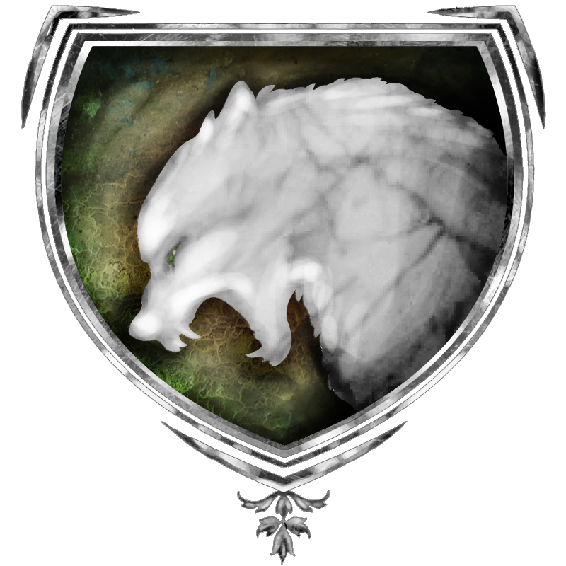

|

|
Das schwarze Brett
|
|
| Übersicht,
Anschläge und Stammtisch (RPG) |
|
Nächtliche Geräusche (1  ) )
|
Daerwain Saelhugion
  |
Siedler berichteten heute von seltsamen nächtlichen Geräuschen auf dem Kontinent Loh.
Hat schon irgendjemand etwas verdächtiges entdeckt ?
Hohepriester Daerwain Saelhugion,
Vorsteher von Tawarlorn,
Hohepriester im Dienste des einzig wahren Glaubens an Larja,
Legionär Larjas
Zur 17. Stunde am 3.Saatmond im Jahre 454 |
13.02.13 21:05
|
|
| Romo Silberhand (RIP) |
Werter Hohepriester, ich glaube Ihr seid nicht auf dem neuesten Stand der Dinge.
Ich würde Euch raten mal ab und zu Auch andere Dinge am Schwarzen Brett zu lesen.Die Geschichten zum Beispiel sind hin und wieder sehr aufschlussreich.
Romo Silberhand
Zur 24. Stunde am 3.Saatmond im Jahre 454 |
13.02.13 22:46
|
|
Markus Feuernacht
  |
>Markus schaut Ashaya an und murmelt leise< Wir sind das dieses mal aber nicht oder?
Weiser Markus Feuernacht,
Vorsteher von Shambhala,
Minister für Wirtschaft und Planung
Zur 1. Stunde am 4.Saatmond im Jahre 454 |
13.02.13 22:55
|
|
| Ashaya Feuernacht (RIP) |
Also wir haben letzte Nacht geschlafen ....
Zu Markus flüstert und die roten Ohren mit ihren Haaren bedeckt
Freifrau Ashaya,
Vorsteherin von Burg Sternental
Zur 1. Stunde am 4.Saatmond im Jahre 454 |
13.02.13 23:00
|
|
Alberix, Sohn des Duglim
  |
Einwohner von Loh und der ganzen Scherbe - seit wachsam und lasst des Nachts die Türen nicht offen. Die Schleimratten von Dämonenanbetern treiben wieder ihr Unwesen.
Haltet euch fern vom Turaacker auf Loh!
Bruder Kittin, Ritter Turas hat zwar die Untotenflut eingedämmt, doch die Hinterlist und die Täuschung waren stets die Mittel der Götzenanhänger.
Wer den Schergen der Absieben begegnet hat umgehend den nächsten Lichtsiebengeweihten zu informieren. Ruft die Ritter Turas oder die Legionäre der anderen Lichtsieben.
Die Dunkelheit kriecht über den Boden - aber der Zorn und das geheiligte Licht der wahren Sieben wird diesen Dunst verdampfen und verbrennen!
Hohepriester Alberix, Sohn des Duglim,
Vorsteher von Turakloster Golden Isle,
Hohepriester im Dienste des einzig wahren Glaubens an Tura,
Grabwächter der Lagerinsel,
Ritter Turas
Zur 6. Stunde am 4.Saatmond im Jahre 454 |
14.02.13 0:06
|
|
| Cyrik (RIP) |
14.02.2013 0:00 Sonstiges Verwesungsgeruch weht über Kontinent Loh
Hohepriester Cyrik,
Vorsteher von Eldorado,
Hohepriester im Dienste des einzig wahren Glaubens an Urvan,
Legionär Urvans
Zur 10. Stunde am 4.Saatmond im Jahre 454 |
14.02.13 1:02
|
|
Olivia v. glänzenen Wolfstern
 |
*dem widerlichen Geruche folgend die Horden an Untoten am Turaacker entdeckt*
na denn werte Lichtsiebengeweihte,
so schaut euch dies mal genauer an und weist diesen Nichtlebenden den Weg in ihr Reich, bevor sie unseren schönen Kontinent noch überwandern
*überlegt, mal bei Agathe Wolfskopf als Grabwächterin Lohs einmal anzufragen, ob diese nicht vielleicht die platt getretenen Blümchen auf dem Ehrengelände wieder richten möchte*
Weise Olivia v. glänzenen Wolfstern,
Vorsteherin von Wolfsstern,
Ehefrau des ehrenwerten Elrohir v. glänzenen Wolfstern,
Feuerwölfin der Nation
Zur 8. Stunde am 5.Saatmond im Jahre 454 |
14.02.13 6:05
|
|
Daerwain Saelhugion
|
So, ich habe dann erstmal alle untoten beim Turaacker in ihre Gräber zurückgeschickt und werde das ab jetzt regelmässig kontrollieren um sie an der Ausbreitung zu hindern
Hohepriester Daerwain Saelhugion,
Vorsteher von Tawarlorn,
Hohepriester im Dienste des einzig wahren Glaubens an Larja,
Legionär Larjas
Zur 16. Stunde am 5.Saatmond im Jahre 454 |
14.02.13 7:57
|
|
| Cordelia deLor (RIP) |
Untote Jäger... Woher kommen sie? Wer hat sie geschickt? In welchem Auftrag sind sie hier? Hat sich das schon jemand mal gefragt?
Ich wohne schon lange nicht mehr auf Loh. Auch ist Loh hunderte von Seemeilen von mir entfernt, und doch geben mir die Geschehnisse in der jüngsten Vergangenheit zu denken.
Hier stehen viele Berichte von Minotauren, Banditen, Untoten Jägern. Doch alles klingt, als sei es nur etwas Einzelnes.
Kann es sein, dass die Minotauren ihre Truppen um sich scharen und diese stärken? Kann es sein, dass Minotauren sich ihre Verbündeten aus den Gräbern holen? Aus Sümpfen und aus trocknen Einöden? All diejenigen, die wir seid Jahren teils aus Spaß - teils aus wirtschaftlichem Eigennutzen vertreiben?
Ich segelte vorhin mit meinem Freund und Herren Felerian nicht weit weg von Long Island. Und dabei viel uns folgendes auf:


Wir fragten uns, wie es angehen kann, dass ein Minotaure auf den weiten des Ozeans zu sehen ist... und das ganze ohne Schiff. Hat dies je ein anderer vor uns schon gesehen?
Und hängt hier nicht auch die Vergangenheit mit drin? Sollten wir nicht Gemeinsam mit offeneren Augen und Ohren über die Scherbe wandeln?
Freifrau Cordelia deLor,
Vorsteherin von Dragon´s Dom,
Das Beste der Nation
Zur 3. Stunde am 8.Saatmond im Jahre 454 |
14.02.13 21:49
|
|
Markus Feuernacht
|
>Hört zu und denkt nach< "Untote Jäger"?
Es ist ein sehr interessanter Gedanke den ihr da habt. Die Minotauren sind geblieben, was mit den Armen Seelen geschieht die sich "Banditen" nennen weiß ich auch nicht. Es ist ruhig geworden vielleicht sind auch diese Leute ins grübeln gekommen.
Ich war damals auf Loh in dem Lager gefangen und es lag etwas finsteres und Bösartiges unter ihrem Lager. Ob dies von ihnen bewusst gewählt worden war oder reiner Zufall weiß ich nicht zu sagen. Mir kamen die Minos nicht sehr Intelligent vor, sehr wohl aber Stark und Zäh. Sie haben uns alle überrascht mit ihrer Armada, ihren Belagerungen von Städten und Anlegern.
Ich halte es nicht[/n] für aus geschlossen, dass die Dämonen und diese Seelenlosen Körper etwas mit den Minos zu tun haben. Wir sollten es genauer beobachten.
Vielleicht kennen Hexen Zirkel die "Magie" oder Rituale der Minos oder zumindest könnten diese sie verstehen und Spuren zu einem Bild formen. Wir sollten acht geben...
Weiser Markus Feuernacht,
Vorsteher von Shambhala,
Minister für Wirtschaft und Planung
Zur 4. Stunde am 8.Saatmond im Jahre 454 |
14.02.13 22:03
|
|
| Cordelia deLor (RIP) |
neuesten Berichten nach, ich zitiere:
"15.02.2013 0:00 Sonstiges Verwesungsgeruch weht über Cap Púccino
15.02.2013 0:00 Sonstiges Siedler berichten von seltsamen nächtlichen Geräuschen auf Lagerinsel"
Nun auch hier. Und ich glaube, dies ist nur der Anfang.
Freifrau Cordelia deLor,
Vorsteherin von Dragon´s Dom,
Das Beste der Nation
Zur 17. Stunde am 9.Saatmond im Jahre 454 |
15.02.13 6:33
|
|
| Lisa von Falkenstein (RIP) |
Ich weile noch nicht allzulange auf der Scherbe, doch lese ich viel, um mir ein Bild des Lebens hier zu machen.
Ich denke nicht, dass die Ereignisse zusammen gehören, eher zufällig einzelnd, jedoch gleichzeitig auftreten.
Die Minotauren sind schon lange da. Das Gration sehr lange seine Suppe kochen konnte, ohne gestört zu werden, hat seiner Armee sicher eine gute Macht zugespielt.
Evtl. verbünden sich die Tauren mit den Piraten. Die einen sind gut zu Wasser und könnten Armeen schnell fortbewegen, die anderen haben Stärke.
Die dürfte jedoch nichts mit den Untoten auf den Äckern zu tun haben. Hier wiederrum ist das Ableben von Verkünder Aywen ausschlaggebend ((http://www.scherbenwelten.de/kommnew.php?viewer=&css=&kategorie=16&beitrag=133653))
Lisa von Falkenstein
Zur 18. Stunde am 9.Saatmond im Jahre 454 |
15.02.13 6:56
|
|
Agathe Wolfskopf
  |
*ein junges, rothaariges Mädchen mit dunkler Kutte befestigt den Anschlag*
Hallo zusammen,
ich hoffe diese Worte erreichen euch, ich werde eine meiner Kolleginnen wegschicken, um die Botschaft zu übermitteln.
Aufgrund von Alberix´ Warnung und den Vorfällen auf Loh, habe ich gestern am Turaacker von Cap Púccino nach dem Rechten gesehen gehabt. Da es schon recht spät war, habe ich dort auch übernachtet.
Heute Morgen wurde ich von einem ungewöhnlichen Verwesungsgeruch geweckt. Als ich den Turaacker verlassen wollte, fand ich mich in einer Meute Untoter wieder.
Es handelt sich dabei, soviel ich sehen kann, um 4 Untote und einen ihrer Fürsten, der edlere Gewandung und einen Stab trägt.
Für die umgehende Aussendung von Legionären wäre ich sehr dankbar. Erholung können diese im Gasthaus von Chevonne finden, dieses liegt in der Nähe des Ackers.
Mit freundlichen Gruße
Lady Agathe Wolfskopf,
Vorsteherin von Hexenhain,
Grabwächterin von Cap Púccino
Zur 22. Stunde am 9.Saatmond im Jahre 454 |
15.02.13 7:55
|
|
Alberix, Sohn des Duglim
|
*Eine Elfe gekleidet in die Robbe einer Magierin befestigt einen Anschlag*
Volk der Scherbe,
vernehmt den Bericht, den ich im Auftrag meines Herrn, Hohepriester Alberix, Sohn des Duglim, Ritter Turas hiermit veröffentliche.
Kontinent Loh
Der lohsche Turaacker wurde jüngst geschändet, entweiht und unheiliges Leben entlockt.
Hohepriester Kittin Silberfang, der in den Diensten Urvans steht und Hohepriester Daerwain Saelhugion, Legionär Larjas ist es zu verdanken das die ersten Fluten der Untoten niedergerungen werden konnten.
Der Turaacker auf dem Kontinent Loh ist wieder der schönen Göttin geweiht - Tura sandte ihren göttlichen Segen durch die Hände meines Herrn und hat den Brodem des Bösen vertrieben!
Lobet und preiset Tura!
Cap Púccino
Dem Turaacker zu Cap Púccino sind nur kurz nach den Ereignissen auf Loh ebenfalls absiebengetriebene Unholde entstiegen.
Die Bekämpfung jener Untoten ist im vollen Gange. Es ist bereits gelungen bis zum Turaacker vorzustossen und Hohepriester Alberix, Sohn des Duglim, Ritter Turas hat auch diesen entweihten Boden erneut dem Segen Turas zugeführt.
Lobet und preiset Tura!
Lagerinsel
Kardinal Theogrimm, Ritter Turas segelt mit dem Auftrag über die Scherbe, ein jeden Turaacker zu kontrollieren.
Just auf seiner Rückreise vom Turaacker auf Tol in Mar hat ihn sein gesegneter Instinkt dazu verleitet, erneut den Anger auf der Lagerinsel anzusteuern. Er fand diesen geschändet und entweiht vor.
Es ist Kardinal Theogrimm zu verdanken, dass er Turas Segen durch seine Hände auf den entweihten Anger bringen konnte und damit verhinderte, dass auch dort sich die Schergen der Dämonenötzen erheben.
Lobet und preiset Tura!
Seit wachsam Völker der Scherbe - die Dämonen versuchen in unsere Welt einzudringen.
Seit gestärkten Mutes Völker der Scherbe - die Recken der Lichtsieben eilen über die Landen und schlagen die gierigen Finger der Dämonenbrut ab, wo sie versuchen nach dem weltlichen zu greifen.
Vernehmt diese Worte und preiset derob Tura und alle Lichtsieben.
gez.
Poviel, Erste Maga im Dienste des Hohepriesters und Ritter Turas Alberix, Sohn des Duglim
gesiegelt
Hohepriester Alberix, Sohn des Duglim,
Vorsteher von Turakloster Golden Isle,
Hohepriester im Dienste des einzig wahren Glaubens an Tura,
Grabwächter der Lagerinsel,
Ritter Turas
Zur 7. Stunde am 11.Saatmond im Jahre 454 |
15.02.13 15:29
|
|
Baldur McMulenberc
  |
Harret der Dinge, die da kommen, denn das Ende ist nah! Wo ist die Katze mit dem roten Mond? Und wer hat mir mein Kraut geklaut?
*rennt panisch durch die Gegend*
Markgraf Baldur McMulenberc,
Vorsteher von Drachenburg,
Anführer der glorreichen Nation "Dis iratis natus",
Sinyas Alptraum
Zur 23. Stunde am 12.Saatmond im Jahre 454 |
16.02.13 0:53
|
|
Tar Aldarion
 |
Elijah ist schon lange tot, Baldur.
Veteran Tar Aldarion,
Vorsteher von Südliche Pforte des Torfreichs
Zur 2. Stunde am 13.Saatmond im Jahre 454 |
16.02.13 1:39
|
|
| Chevonne (RIP) |
Also, ich habe keine Male der Dämonen auf den Untoten gesehen. Ich würde den Kreis der Verdächtigen also nicht auf die Dämonen allein beschränken. Vielleicht ist es nur ein Irrer, der hier durch die Welt reist und die Toten in ihrer Ruhe stört. Oder es sind vielleicht auch die Minotauren, die etwas vorbereiten. Schließlich wussten die Wichtel von allerlei Aktivitäten auf Long Island zu berichten.
Lady Chevonne,
Vorsteherin von Hafen der Sinne,
Anführerin der glorreichen Nation "Zirkel der Sinne"
Zur 13. Stunde am 14.Saatmond im Jahre 454 |
16.02.13 9:46
|
|
Kantar
 |
Oder Jack LeGrande hat da seine Finger im Spielt.
Baron Kantar,
Vorsteher von Kap Amoris,
Anführer der glorreichen Nation "Händler der Freiheit",
Witwer von Pebrilia Celil-Galdor
Zur 16. Stunde am 14.Saatmond im Jahre 454 |
16.02.13 10:22
|
|
Turiandor Dragus
|
Oder PDonnergott der den Kampf gegen die Untoten aktiv stört!
Hohepriester Turiandor Dragus,
Vorsteher von Höllentorfeste,
Hohepriester im Dienste des einzig wahren Glaubens an Urvan,
Bärenfrosti,
Ehemann der reizenden Casanyar
Zur 17. Stunde am 14.Saatmond im Jahre 454 |
16.02.13 10:41
|
|
Galaton Dragus
 |
Es muss bei so gemeinsamen Aktionen immer einen Quoten-Idioten geben...!
Graf Galaton Dragus,
Vorsteher von Kristallhafen,
Ehemann der reizenden Tonja Dragus
Zur 17. Stunde am 14.Saatmond im Jahre 454 |
16.02.13 10:45
|
|
Kapo el Ligno
  |
Auch auf Tol in Mar gab es kurzzeitig einige Untote, die sich durch ihren Verwesungsgeruch bemerkbar machten. Als Quelle wurde recht schnell der hiesige Tura-Acker identifiziert, der sofort durch eine gemeinsame Aktion des Reichs Narvalon und des Meervolkes von der unheiligen Präsenz befreit wurde. Insgesamt waren es etwa 200 Untote, angeführt von zwei Untotenfürsten. Unser Einsatz war jedoch offenbar nicht schnell genug, denn der Turaacker ist nun entweiht.
Ein Turapriester wird gesucht, der die Weihung erneut vornehmen kann!
Fürst Kapo el Ligno,
Vorsteher von Kap der sieben Winde,
Anführer der glorreichen Nation "Atha´an Miere",
Herr der Wogen
Zur 12. Stunde am 17.Saatmond im Jahre 454 |
17.02.13 2:18
|
|
| Cordelia deLor (RIP) |
wo bleiben die legionäöre um auf der steppe zu helfen?
Der ehrenwerte Trebonius wurde von einem Untotenfürsten heimgesucht. seine stadt wird verseucht von einem stinkenden und beißenden leichengeruch. Zu Hilff ihr legionäre der Lichtsieben. Die Stadt Phönixfeder.
Freifrau Cordelia deLor,
Vorsteherin von Dragon´s Dom,
Das Beste der Nation
Zur 10. Stunde am 19.Saatmond im Jahre 454 |
17.02.13 13:00
|
|
Icke wieder
 |
Die Stadt ist erst einmal gesichert.
Fürst Ottor Waefre,
Vorsteher von Oneiros
Zur 13. Stunde am 19.Saatmond im Jahre 454 |
17.02.13 13:43
|
|
| Cordelia deLor (RIP) |
ich danke euch dafür
Freifrau Cordelia deLor,
Vorsteherin von Dragon´s Dom,
Das Beste der Nation
Zur 14. Stunde am 19.Saatmond im Jahre 454 |
17.02.13 13:50
|
|
| Hufus (RIP) |
Auf Arandor Vanenia haben die Ritter Turas ganze Arbeit geleistet. Dank dafür.
Nun haben wir nur noch Spinnen und Orks und so Gezeugs, die wie wild aus ihren Löchern krabbbeln. Sehr ungewöhnlich das Ganze ...
Baron Hufus,
Vorsteher von Drakengard
Zur 17. Stunde am 20.Saatmond im Jahre 454 |
17.02.13 20:19
|
|
Olivia v. glänzenen Wolfstern
|
*puterrot anläuft und beschämt ihren Fehler bemerkt,
schnell den ersten Anschlag abnimmt und einen neuen anpinnt*
"der Turaacker Lohs wurde wieder von den Schergen der ABSIEBEN geschändet,
Gedenksteine umgeworfen, Blumenrabatten zertreten,
die marodierenden Hoden sind vertrieben, doch denke ich, sollte hier neu geweiht werden "
Weise Olivia v. glänzenen Wolfstern,
Vorsteherin von Wolfsstern,
Ehefrau des ehrenwerten Elrohir v. glänzenen Wolfstern,
Feuerwölfin der Nation
Zur 20. Stunde am 22.Saatmond im Jahre 454 |
18.02.13 8:10
|
|
| Cyrik (RIP) |
Das klingt etwas merkwürdig werte Olivia wie ihr das formuliert...
Hohepriester Cyrik,
Vorsteher von Eldorado,
Hohepriester im Dienste des einzig wahren Glaubens an Urvan,
Legionär Urvans
Zur 20. Stunde am 22.Saatmond im Jahre 454 |
18.02.13 8:12
|
|
wollium v. glänzenen wolfstern
 |
*schämt sich für die Ausdrucksweise seiner Mutter und streicht das Hoden und setzt ein Horden*
Baron wollium v. glänzenen wolfstern,
Kardinal im Dienste des einzig wahren Glaubens an Wendaria,
Lichtwolf der Nation
Zur 20. Stunde am 22.Saatmond im Jahre 454 |
18.02.13 8:12
|
|
Daerwain Saelhugion
|
Da die Entweihungen sich wiederholen scheinen wir die wahre Ursache noch nicht gefunden zu haben und es gilt ausschau zu halten nach weiteren verdächtigen Signalen und Aktivitäten.
Hohepriester Daerwain Saelhugion,
Vorsteher von Tawarlorn,
Hohepriester im Dienste des einzig wahren Glaubens an Larja,
Legionär Larjas
Zur 24. Stunde am 22.Saatmond im Jahre 454 |
18.02.13 9:10
|
|
| Shâna Carnesîr (RIP) |
<Durch Zufall kommt sie am Marktplatz vorbei und lauscht den Gesprächen, wirft eine Frage in den Raum>
Vielleicht müssen die Turaäcker vom Verkünder geweiht werden?
Erzpriesterin Shâna Carnesîr,
Vorsteherin von Meryton,
Erzpriesterin im Dienste des einzig wahren Glaubens an Pheron,
Anführerin der glorreichen Nation "Said Ýr",
Legionärin Pherons,
Befehlshaberin der Legion Pherons
Zur 1. Stunde am 23.Saatmond im Jahre 454 |
18.02.13 9:20
|
|
Enigma
  |
*wendet sich zu Shâna*
Da wird wohl ein neuer Verkünder von Nöten sein, da heute wohl auch der letzte sterbliche Überrest des alten Verkünders zu Grabe getragen wurde.
Wir werden sehen wie sich der Tura Konvent sich dazu äussert.
*Shâna noch ein paar Kräuter reicht, sie lieb drückt und sich wieder in ihre Heimat begibt*
Regentin Enigma,
Vorsteherin von Abadir
Zur 4. Stunde am 23.Saatmond im Jahre 454 |
18.02.13 9:57
|
|
Alberix, Sohn des Duglim
|
*Eine Elfe gekleidet in die Robbe einer Magierin befestigt einen Anschlag*
Volk der Scherbe,
vernehmt den erneuten Bericht, den ich im Auftrag meines Herrn, Hohepriester Alberix, Sohn des Duglim, Ritter Turas hiermit veröffentliche.
Kontinent Loh
Der lohsche Turaacker wurde erneut entweiht und ein Geweihter Turas wird sich aufmachen, diesen alsbald wieder zu segnen.
Cap Púccino
Der Turaacker zu Cap Púccino ist nach letzten Meldungen gesichert und wird durch Truppen bewacht.
Lagerinsel
Der Turaacker auf der Lagerinsel ist nach aktuellsten Meldungen sicher.
Tol in Mar
Dank des schnellen Eingreifens örtlicher Heerführer konnten die auftauchenden Untoten besiegt und der Segen Turas durch die Hände von Hohepriester Alberix auf den Anger zurückgebraucht werden.
Der Turaacker auf Tol in Mar ist nach aktuellsten Meldungen sicher.
Lobet und preiset Tura, lobet und preiset alle Lichtsieben!
Sonnensteppe
Dem Turaacker auf der Sonnensteppe entströmen ungehindert Untote. Es ist trotz der vielen Streitern im Namen der Lichtsieben noch nicht gelungen bis zum Acker vorzudringen und diesen wieder zu segnen.
Mehrere Armeeverbände kämpfen bereits gegen die Flut der Untoten und es gilt nicht nur den entweihten Boden freizukämpfen, sondern auch die Stadt Phoenixfeder zu befreien.
Kyll
Dem Turaacker auf Kyll entströmen ungehindert Untote. Es ist auch hier noch nicht gelungen, den Zugang bis zum Turaacker frei zu kämpfen um den Acker wieder zu segnen.
Arandor Vanenia
Dem Turaacker auf Arandor Vanenia sind jüngst Untote entströmt. Nachdem die Geweihten Theogrimm und Alberix ob ihrer Erschöpfung vergeblich versuchten den freigekämpften Anger zu segnen, ist es Kardinal Kinggidora zu verdanken dass der Segen Turas den Boden Ruhestätte doch noch ereilte. Der Turaanger wird nun durch Truppen bewacht.
Lobet und preiset Tura, lobet und preiset alle Lichtsieben!
Die Kraft aller Lichtsiebengläubiger ist gefragt Kraft im Glauben als auch in Taten.
- Meldet Beobachtungen, bleibt aber so ihr nicht kämpferisch gegen die Widernatürlichen vorgeht in sicherer Distanz zu den Turaackern.
- Bekämpft die Untoten (und lasst die Untotenfürsten unbehelligt, sofern eure Siegesaussichten nicht gewiss sind Angriffe die durch die Fürsten der Untoten abgewehrt werden, bringen diese dazu, noch weitere untoten Schergen zu ihrem Schutz herbeizurufen).
- Betet um das strafende Licht der Göttlichen auf dass die Dämonenbrut verbrennen möge.
Höret auch, dass es gewisse kämpferische Übergriffe von Sterblichen gegen die Streiter wider der Untoten gab. Auch Diebstahl an Vorräten von helfenden Armeen wurden gemeldet.
Beim Kampf um die Turaacker soll keine weltliche Fehde geführt werden. Wer auf oder um die Turaacker einen Streiter der Lichtsieben bewusst schädigt, wird als Unterstützer der Untoten und Absiebengötzen gesehen.
Vernehmt diese Worte und verliert nicht euren Glauben sondern stärkt mit eurer Überzeugung die Arme der Lichtsiebenstreiter. Lobet und preiset Tura und alle Lichtsieben!
gez.
Poviel, Erste Maga im Dienste des Hohepriesters und Ritter Turas Alberix, Sohn des Duglim
gesiegelt
Hohepriester Alberix, Sohn des Duglim,
Vorsteher von Turakloster Golden Isle,
Hohepriester im Dienste des einzig wahren Glaubens an Tura,
Grabwächter der Lagerinsel,
Ritter Turas
Zur 21. Stunde am 23.Saatmond im Jahre 454 |
18.02.13 14:05
|
|
Kapo el Ligno
|
Da die Turaäcker nicht auf den Karten verzeichnet sind (welch eine Verfehlung der Wichtel!), wäre es sicherlich hilfreich, hier die Möglichkeit zu beschreiben, wie man sie erreicht. Sollte ein Leichtes sein für die Grabwächter.
Ich fange mal mit Tol in Mar an:
Der Acker ist bei der Landmarke 4965/697, zu erreichen entweder über Städte Herendeneth/Caer Bannog/Skryll oder über den Anleger 4964/688. Wer einen Kampf gegen die Piraten und Diebe nicht scheut, kann auch über den Hafen (4968/695) anreisen.
Fürst Kapo el Ligno,
Vorsteher von Kap der sieben Winde,
Anführer der glorreichen Nation "Atha´an Miere",
Herr der Wogen
Zur 23. Stunde am 27.Saatmond im Jahre 454 |
19.02.13 12:47
|
|
Daerwain Saelhugion
|
Zur Lage der Turaäcker wie sie mir Hohepriester Alberix zukommen lies:
4303/429 - Lagerinsel
4965/697 - Tol in Mar
3333/-509 - Cap Puchino
4259/-165 - Loh
5156/1561 - Sonnensteppe
4711/-113 - Kyll
3425/558 - Arandor Vanenia
Hohepriester Daerwain Saelhugion,
Vorsteher von Tawarlorn,
Hohepriester im Dienste des einzig wahren Glaubens an Larja,
Legionär Larjas
Zur 23. Stunde am 27.Saatmond im Jahre 454 |
19.02.13 12:56
|
|
Olivia v. glänzenen Wolfstern
|
hat jemand Informationen zu Kyll?
sollten dort noch Absiebenstinker unterwegs sein, würde ich heute Abend mal hinfahren und sie niederringen
Weise Olivia v. glänzenen Wolfstern,
Vorsteherin von Wolfsstern,
Ehefrau des ehrenwerten Elrohir v. glänzenen Wolfstern,
Feuerwölfin der Nation,
Vertreiberin der marodierenden Hoden
Zur 2. Stunde am 28.Saatmond im Jahre 454 |
19.02.13 13:27
|
|
Rejäl
 |
Auf Kyll sind noch jede Menge Untoter. Ein paar konnte ich vernichten, jedoch ist noch viel zu tun.
Allerdings hatte ich auch zwei Untotenfürsten gesichtet, die einige Begleiter dabei hatten.
Zuletzt waren diese nicht mehr zu erkennen, da sich alle Grüppchen von Untoten auf den Turaacker zurückgezogen hatten.
Kardinal Rejäl,
Vorsteher von Majores Morgul,
Kardinal im Dienste des einzig wahren Glaubens an Bendur
Zur 4. Stunde am 28.Saatmond im Jahre 454 |
19.02.13 13:56
|
|
Icke wieder
|
Heute 20 Uhr wird eine Gruppe Streiter die restlichen UTFs auf der Sonnensteppe erledigen und hoffentlich endlich die Belagerung von Phönixfeder beenden. Danach werden wir auch nach Kyll kommen, sofern unser geliebter Feind nicht wieder alles niedermäht was helfen will.
Wer also heute noch auf der Sonnensteppe helfen möchte und kann, 19.45 Uhr fährt ein Schiff ab Kathodos (und kann andere Einstiegsplätze auf dem Weg ansteuern). Nachricht an mich. Stützer durch Eisregenmagier und ~100er Krieger mit mindestens Kriegsbeilen aber bestenfalls Unis werden gesucht.
Ohne ausreichend Helfer können wir die Steppler nicht von der Absiebenplage befreien. Eine Heilerin ist vor Ort.
Fürst Ottor Waefre,
Vorsteher von Oneiros
Zur 4. Stunde am 28.Saatmond im Jahre 454 |
19.02.13 14:05
|
|
| Cymoril (RIP) |
Eine Elfe steht unbeholfen mit einem Pergament in der Hand auf dem Marktplatz und schaut sich vorsichtig um... dann geht sie beherzt nach vorne zum Anschlagbrett und befestigt das Pergament, es enthält einen Bericht zur Lage auf der Sonnensteppe...
Die Nachricht über die nächtlichen Geräusche und den Verwesungsgeruch auf der Sonnensteppe und die Entweihung des Turaackkers bei Brückendorf,haben das kleine Volk der Freunde des Südens sehr beunruhigt, sodass sich die Weise Cymoril gezwungen sah Tauben auszuschicken, um Hilfe zu erbeten...
Es machten sich sodann einige Krieger, Priester, Magier und Ritter auf den Weg, um Hilfe zu leisten...leider waren die Untoten um ihre Fürsten in der Lage, die erste Schlacht für sich zu entscheiden und sogar ihr Gebiet auszuweiten, sodass die Stadt Phoenixfeder nun von einem Fürsten der Untoten beherrscht wurde.
Durch beherzte Massnahmen wurde Phoenixfeder mit einer schweren Armee belegt und kämpft nun tapfer gegen den Fürsten, mit dem eisernen Willen heute die Stadt zu befreien.
Zur 21.Stunde am 23.Saatmond im Jahre 454 kamen wiederholt Krieger, Magier, Heiler und Ritter auf der Sonnensteppe an, um sich in einer zweiten Schlacht dem Turaacker zu widmen und diese für sich zu entscheiden, komme was wolle.
Die kleine Nation erbaute ein weiteres Gasthaus, damit sich die Kämpfer erholen konnten, zwischen ihren Kämpfen.
Auf dem Acker wurde es derweil ziemlich eng, da jeder den Fürsten den Garaus machen wollte. Stunden vergingen und gespannt standen der Baron Mescalin und die Weise Cymoril in der Innenstadt von Brückendorf, um die Kämpfe aus sicherer Entfernung zu beobachten.
Zu später Stunde hieß es dann.. die Fürsten und ihre Begleiter sind besiegt, der Acker muss nun gesegnet werden... Ein Ritter Turas eilte herbei, um den Acker zu weihen... alle Umstehenden warteten gespannt, doch es gelang ihm nicht...das kleine Volk der Freunde des Südens sah dies mit Schrecken, was würde nun geschehen?
Es wurden Tauben ausgeschickt, um einen anderen zu finden, der den Acker weihen könnte. Nach kurzer Zeit kam die Meldung, dass Alberix, Sohn des Duglim, es versuchen würde, doch weilte er am anderen Ende der Scherbe.
Hektisch wurde ein Schiff seeklar gemacht und man holte Alberix von dem Ort wo er weilte ab und schaffte ihn schnellstens zur Sonnensteppe...dort angekommen, machte sich Alberix auch sofort daran, den Acker zu weihen... aber erst im vierten Versuch kam endlich die erlösende Meldung... "Der Acker ist nun wieder gesegnet.Lobet und segnet Tura!"
Das Volk der Freunde des Südens dankt allen tapferen Kriegern,Rittern, Heilern und Magiern, die so schnell und beherzt zu Hilfe kamen.
Nun hoffen wir, dass die Stadt Phoenixfeder gen Abend befreit wird.
Weise Cymoril,
Vorsteherin von Phoenix
Zur 16. Stunde am 28.Saatmond im Jahre 454 |
19.02.13 16:42
|
|
Olivia v. glänzenen Wolfstern
|
*sich den Staub aus der Kleidung klopft und die Knochen aus den Haaren puhlt*
auf Kyll habe ich nun viele Dutzende dieser Absiebenschergen zurück in ihr finsteres Dunkel befördert,
nun steht der dunkle Fürst auf dem Turaacker,
somit kann ich nichts mehr ausrichten und wünsche den fähigen Lichtsiebenkämpfern mit geballter Kraft des Guten viel Erfolg,
mögen sie den Acker vom Bösen befreien und wieder segnen können
Weise Olivia v. glänzenen Wolfstern,
Vorsteherin von Wolfsstern,
Ehefrau des ehrenwerten Elrohir v. glänzenen Wolfstern,
Feuerwölfin der Nation,
Vertreiberin der marodierenden Hoden
Zur 19. Stunde am 28.Saatmond im Jahre 454 |
19.02.13 17:33
|
|
Icke wieder
|
Phönixfeder ist wieder befreit und die Untotenfürsten von der Sonnensteppe vertrieben.
Fürst Ottor Waefre,
Vorsteher von Oneiros
Zur 9. Stunde am 29.Saatmond im Jahre 454 |
19.02.13 20:41
|
|
Kapo el Ligno
|
Ich habe in einem langen und zermürbenden Kampf auf Kyll einige Untotengruppen vernichtet, so dass man endlich gegen den Untotenfürsten antreten kann. Dieser hat jedoch über 30 Begleiter bei sich, einige davon konnte ich ins Jenseits befördern, so dass insgesamt "nur noch" 34 Begleiter da sind. Armeeeinsatz ist angeraten!
Fürst Kapo el Ligno,
Vorsteher von Kap der sieben Winde,
Anführer der glorreichen Nation "Atha´an Miere",
Herr der Wogen
Zur 14. Stunde am 30.Saatmond im Jahre 454 |
20.02.13 3:33
|
|
Olivia v. glänzenen Wolfstern
|
wenn ihr mich wissen lasst, wann eine gemeinsame Aktion startet, wäre ich gerne als Stützerin, Heilerin oder Vertreiberin der marodierenden Horden zugegen
Weise Olivia v. glänzenen Wolfstern,
Vorsteherin von Wolfsstern,
Ehefrau des ehrenwerten Elrohir v. glänzenen Wolfstern,
Feuerwölfin der Nation,
Vertreiberin der marodierenden Horden
Zur 6. Stunde am 36.Saatmond im Jahre 454 |
21.02.13 11:17
|
|
Alberix, Sohn des Duglim
|
Volk der Scherbe - vernehmt das seit Tagen alle Turaäcker frei von Untoten und alle Äcker wieder dem Namen Turas gesegnet sind.
Im Moment stehen auf den Äcker noch Wächter die verhindern sollen das erneute Entweihungen stattfinden.
Somit ist Verständnis von allen gefordert, dass im Moment nicht für jeden der Zutritt zu den Turaäckern gewährt ist.
Die erste Gefahr ist eingedämmt - der Grund der blasphemischen Entweihungen aber noch nicht gebannt. Der Konvent berät über das weitere Vorgehen.
gez.
Hohepriester Alberix, Sohn des Duglim,
Vorsteher von Turakloster Golden Isle,
Hohepriester im Dienste des einzig wahren Glaubens an Tura,
Grabwächter der Lagerinsel,
Ritter Turas
Zur 19. Stunde am 80.Saatmond im Jahre 454 |
03.03.13 20:36
|
|
Kapo el Ligno
|
Wäre es denn möglich, dass der Grund für dieses Treiben auch den Uneingeweihten mitgeteilt wird?
Fürst Kapo el Ligno,
Vorsteher von Kap der sieben Winde,
Anführer der glorreichen Nation "Atha´an Miere",
Herr der Wogen
Zur 23. Stunde am 82.Saatmond im Jahre 454 |
04.03.13 8:46
|
|
Abdiel der Gehörnte
 |
Wer weiß, vielleicht tappen ja auch die werten Gelehrten im Dunkeln?
Freiherr Abdiel der Gehörnte,
Vorsteher von Lichtergarten
Zur 20. Stunde am 83.Saatmond im Jahre 454 |
04.03.13 13:48
|
|
Kapo el Ligno
|
Ich will ja nicht nerven, aber gedenken vielleicht die Geistlichen, uns Normalsterbliche einzuweihen? Oder sind wir weiterhin nur willkommen, wenn wir blanken Stahl schwingen und Armeen anführen?
Fürst Kapo el Ligno,
Vorsteher von Kap der sieben Winde,
Anführer der glorreichen Nation "Atha´an Miere",
Herr der Wogen
Zur 7. Stunde am 28.Blumenmond im Jahre 454 |
12.03.13 14:43
|
|
Abdiel der Gehörnte
|
Wie mein Mentor immer zu sagen pflegte: Wut Ding will Geile haben! Oder so ähnlich...
Freiherr Abdiel der Gehörnte,
Vorsteher von Lichtergarten
Zur 23. Stunde am 29.Blumenmond im Jahre 454 |
13.03.13 0:01
|
|
Übersicht,
Anschläge und Stammtisch (RPG)
|
|
|
|